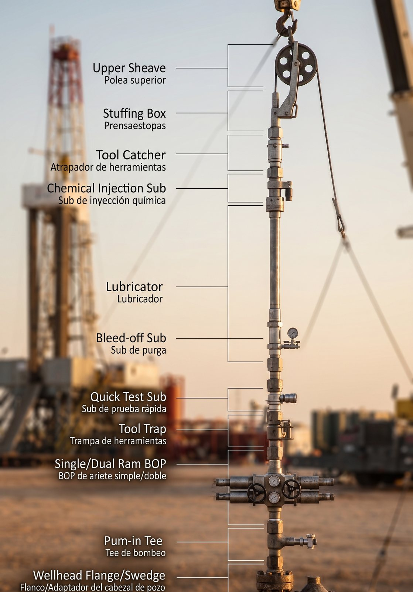

Imagen de portadaPrompt IA: Detailed cross-section view of a high-pressure Blowout Preventer (BOP) assembly and lubricator stack, oilfield surface pressure control equipment, industrial engineering diagram style, orange and dark slate accents, ultra-detailed metallic surfaces.Introducción
Durante las intervenciones con guaya en pozos activos, los equipos de Control de Presión en Superficie (PCE - Pressure Control Equipment) forman la principal línea de defensa contra un eventual amago de reventón. Comprender la función de cada módulo es vital para garantizar una operación bajo parámetros de máxima seguridad.
Módulos Principales de la Sarta PCE
- Stuffing Box / Cabezal de Inyección de Grasa: Garantiza el sello dinámico alrededor de la guaya mientras esta entra o sale del pozo bajo presión.
- Secciones de Lubricador: Tubos de alta presión dimensionados para alojar las herramientas de fondo antes de ser bajadas al pozo. Sus conexiones rápidas o bridadas deben resistir presiones de trabajo severas.
- Válvula Preventora de Reventones (BOP de Wireline): Sistema de corte o sello de emergencia provisto de arietes (rams) diseñados para sellar alrededor de la guaya o cizallarla en caso de contingencia extrema.
- Flange de Adaptación / Tree Connection: Interfaz directa con la válvula máster del árbol de navidad.
Criterios de Mantenimiento y Recalificación
El fallo de un elemento sellante o una rosca en el lubricador puede provocar la pérdida incontrolada de fluidos. La norma API 6A exige:
- Pruebas hidrostáticas periódicas a la presión de trabajo (WOP).
- Ensayos No Destructivos (END) mediante ultrasonido o líquidos penetrantes en conexiones críticas.
- Reemplazo de elastómeros bajo especificación exigida según la concentración de H₂S o CO₂.
Conclusión y Soluciones PSI
Mantener tus equipos de control de presión certificados evita tiempos no productivos (NPT) y protege al personal en localización. En PSI realizamos la reparación, fabricación y mantenimiento certificado de sistemas PCE bajo estándares de la norma API. Solicita hoy mismo una inspección técnica.
¿Necesitas apoyo técnico o una cotización?
El equipo de Petroservicios Industriales está listo para ayudarte con inspección, fabricación y certificación.
Contáctanos →